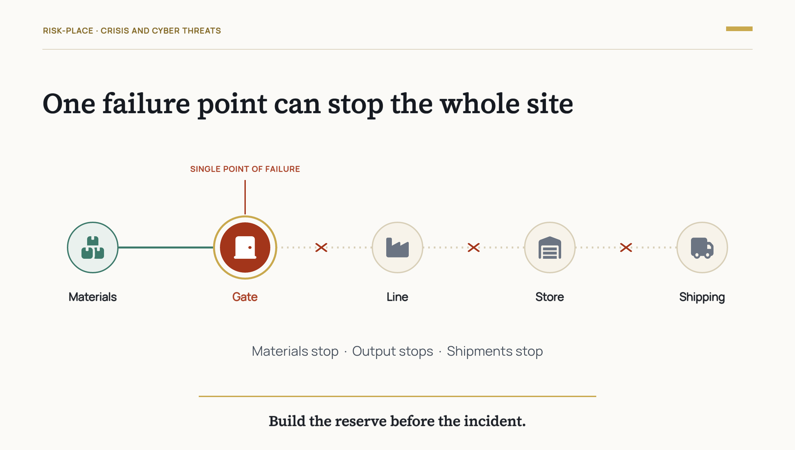

Picture an ordinary morning. Raw materials are due at the gate, the line is ready for the shift, the warehouse is waiting for finished goods and a vehicle is scheduled to leave for the customer. If the only gate is closed, every other part may be intact, yet the working day has already stopped. That node is a single point of failure.

Start by following one order
Do not start with an equipment list. Take one real order and follow it from the customer call and incoming materials to the exit document. At each step, ask what must happen, who does it and which resource makes the step impossible when unavailable.
The map then shows specific dependencies instead of abstract risks: the only vehicle entrance, a line with a long changeover, the warehouse holding the entire finished batch, or the employee whose signature releases the vehicle.
A useful map fits on one page and answers a simple question: where does the chain break when something goes wrong today?
What can be replaced within a day, and what cannot
Divide the nodes into two groups. The market can replace the first group quickly: standard materials, packaging, transport, temporary storage or a substitute shift. Pre-selected suppliers, clear agreements and a modest reserve help here.
The second group is unique to your company: a recipe, tooling, a specialist line, the terms of a key contract or the authority to release a particular batch. You usually cannot buy these the next morning. They need a second way of doing the work, kept in another location or environment.
- For a commodity resource, record who will supply a replacement and how quickly.
- For a unique node, assign an alternative process, site or authority.
- For every option, state its limit: how many orders it can actually support.
The cost of the node guides the protection
Once the list is ready, calculate the cost of one day of downtime for each critical node: missed shipments, continuing payroll and rent, possible penalties and the work required to restore previous output. The method is explained in the article on the cost of one day of downtime.
That figure turns fear into a practical choice. A second gate agreement may cost less than a backup line. For another node, finished goods stored at a nearby site may offer more protection than a complex technical project.
A reserve works only after a live test
A second arrow on a diagram proves little. Follow the alternative route in practice: receive materials through another gate, process an order without the usual system or release a vehicle with a document prepared in advance. The test quickly reveals missing access, authority or even a telephone number.
This work can be done through a drone strike readiness check: break the site into nodes, price the day and test which alternative routes really work.
Frequently asked questions
Follow one order from incoming materials to the departing vehicle. Mark every step that has no second way of being completed.
A reserve lets you use available resources for a while. An alternative provides a second way to do the work when the usual resource is unavailable.
No. Compare the cost of one day of downtime, the availability of a market replacement and the cost of the alternative. Duplication is justified where a quick replacement is unavailable.
Is your team ready for the first hour of a crisis?
You test a plan by running a scenario. Reading it is not enough. The assessment shows the gaps, and the corporate format works through them with your team on your own processes.